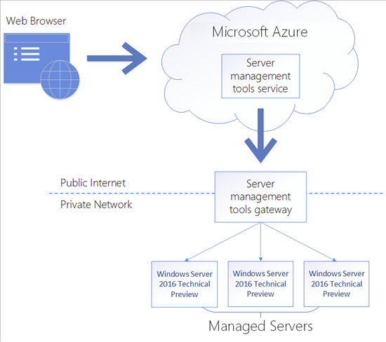
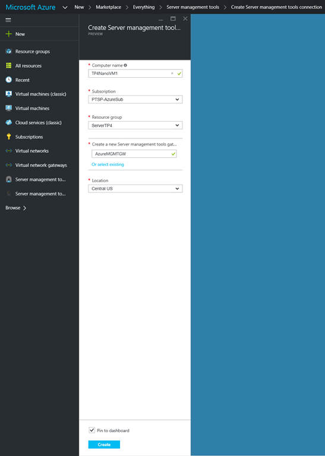
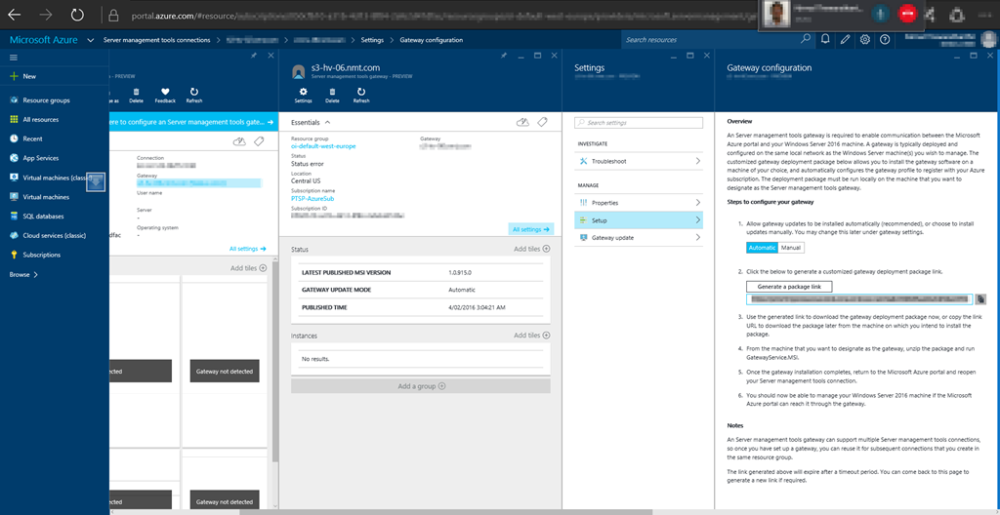
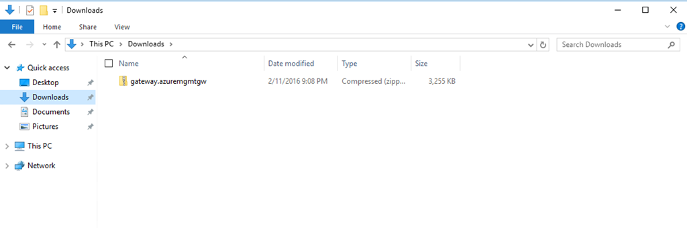
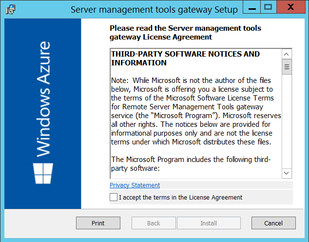
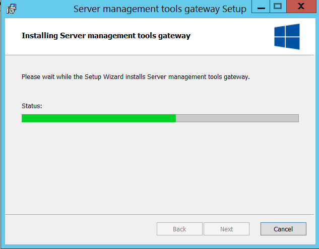
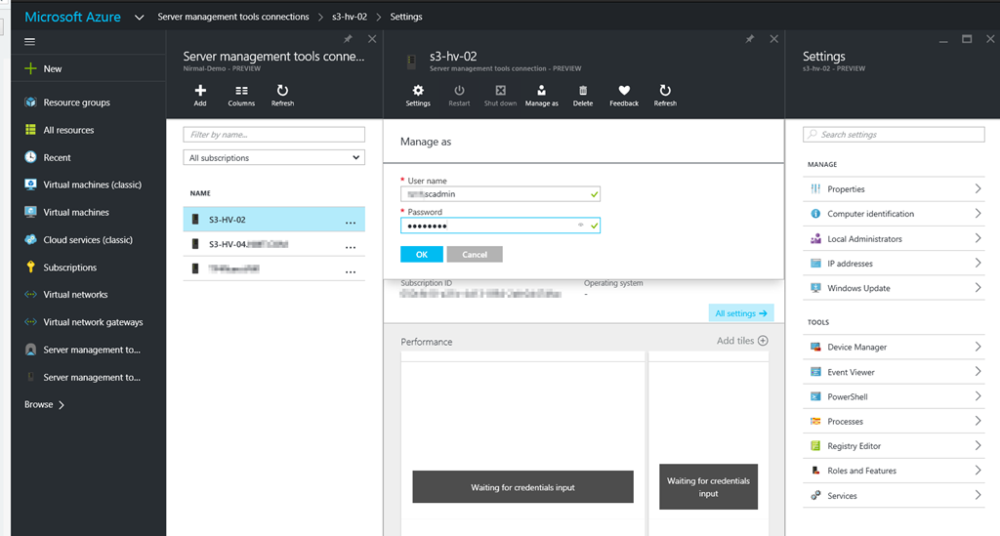
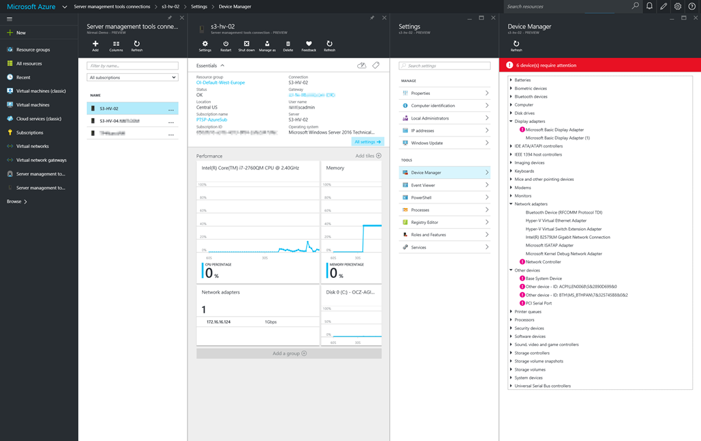

Azure Server Management Tools–Installation
In my previous post, I provided an Introduction to Azure Server Management Tools. In this blog post we will look at installing & configuration Server Management Tools.
First Step involved in setting up Server Management Tools is for us to create a Server Management Tools Connection. Once a connection has been created, we can go ahead and provision Server Management Tools gateway. Gateway is an essential component which provides Azure Server Management Tools service, connectivity in to your on-premises or azure hosted Server 2016 VMs (At the moment support is only for Windows Server 2016 Technical Preview).

Step 01 – Create Server Management Tools Connection
Login to Azure Portal and click New -> search for Server Management Tools
Create Server Management Tools Connection. Provide a computer name for a VM or Server running with Windows Server Technical Preview. Select your subscription and the local. Next step is for us to create the gateway.

Step 02 – Deploy Server Management Tools Gateway
After creating a Server connection navigate to Server management tools gateways -> click on the gateway and then click setup

Grab the installation link and access your Gateway Server VM. open your browser and then download the gateway deployment package.
Extract the package and then run GatewayService.MSI (Make sure that you extract the package before running GatewayService.MSI).

Gateway Setup Installation -> Accept License Agreement and click Install

Installation should only take few minutes

Once you have configured navigate to -> Server management tools connections
Initially, there won’t be any data populated. it’s required to provide Management credentials to establish connectivity.

Once you have provided access credentials, we will be able to see performance data populated and also we get access to Server Management Tools.
